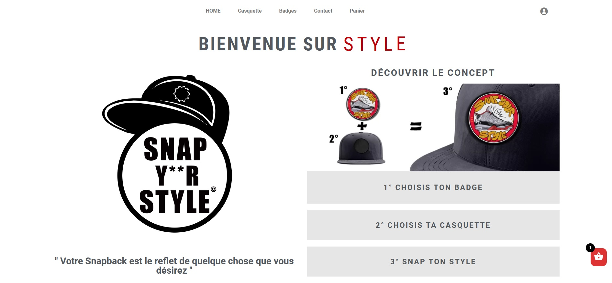
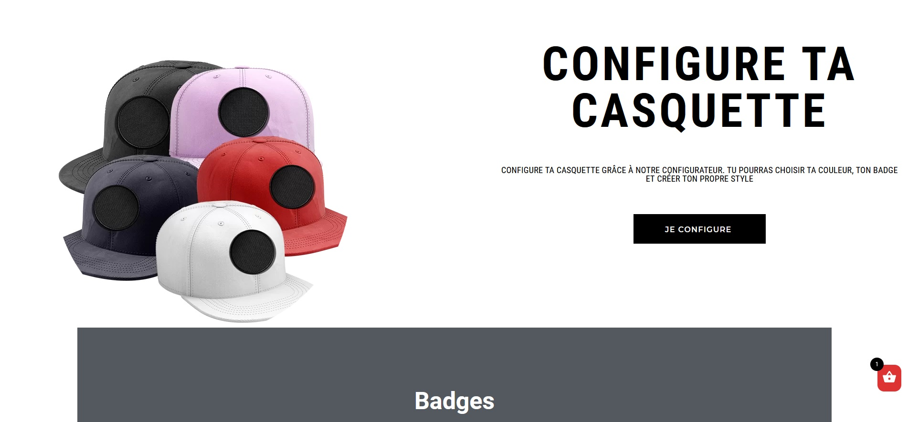
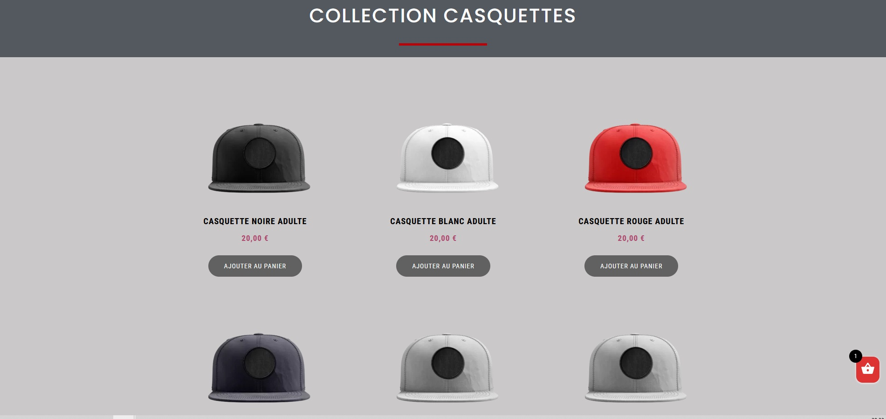

Produisez une étude de marché avec R



Project information
- Categorie: Projet d'analyse de données
- Project date: 07 janvier, 2022
L’objectif principal de ce projet est d’identifier les pays candidats pour exporter les produits (Poulets) de l’entreprise ‘La poule qui chante’ en se basant sur les données de la FAO.
1 Introduction
1.1 Objectif
L’objectif principal de ce projet est d’identifier les pays candidats pour exporter les produits (Poulets) de l’entreprise ‘La poule qui chante’ en se basant sur les données de la FAO.
Pour répondre répondre à cette question on va faire les analyses suivantes:
- Classification ascendante hiérarchique(dendrogramme comme visualisation)
- k-means, afin d’affiner l’analyse
- Comparer les résultats des deux méthodes de clustering
- Analyser les centroides des classes
- Réaliser une ACP afin de visualiser les résultats de l’analyse, comprendre les groupes, les liens entre les variables, les liens entre les individus…
- Une heatmap avec les croisements entre les clusters de pays et les différentes variables (en format image)
1.2 Choisir les variabless selon PESTEL
Nous avons choisi les variables selon la méthode PESTEL (Politiques, Économiques, Sociologiques, Technologiques, Environnementaux et Légaux )
2 Importation et nettoyage des des données
# Définir le dossier de travail
setwd("C:/Users/abdel/Desktop/Projet 9")